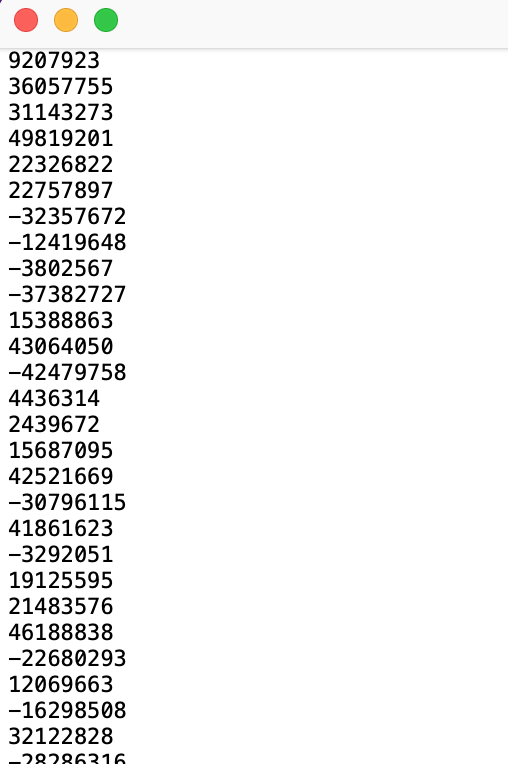

Before you start use application you need to load file with numbers in text format(.txt)
After you loaded file you can find the biggest, smallest, median and mean of numbers
If you want to know how much time it takes to execute function you can check it by clicking on the button with clock or you can check perform all functions by using the corresponding button
Result: 0